为何要对地理数据进行索引
问题
先思考个常见的问题：如何根据自己所在位置查询来查询附近1公里的POI(比如商家、ATM、景点等)
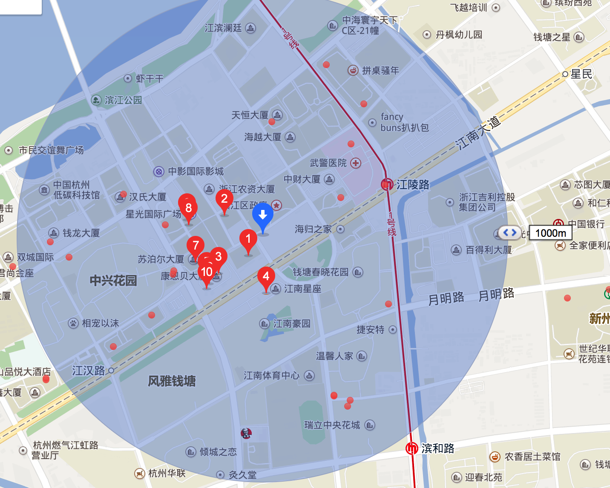
传统的解决思路
方法一： 暴力方法
该方法的思路很直接：计算位置与所有POI的距离(全世界,全中国,全杭州的POI?那数据量可不是一般的大呀)，并保留距离小于1000米的POI。
插句题外话，计算经纬度之间的距离不能像求欧式距离那样平方开根号，因为地球是个不规整的球体（图2a），按最简单的完美球体假设，两点之间的距离函数应该如图2b所示。
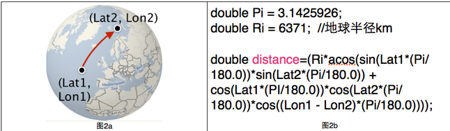
该方法的复杂度为：POI数量*距离函数
方法二:矩形过滤法
该方法分为两步：
a)先用矩形框过滤,排除大部分的点位（图4a），判断一个点在矩形框内很简单，只要进行两次判断（LtMin<lat<LtMax; LnMin<lng<LnMax），落在矩形框内的POI个数为n；
b)用球面距离公式计算位置与矩形框内n个POI的距离（图4b），并保留距离小于1000米的POI
矩形过滤方法的复杂度为：POI数量*矩形过滤函数 + n*距离函数。
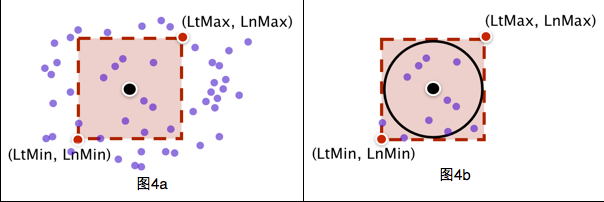
相比于方法一查询时间大大降低，但是对于一次查询来说还是很长。时间长的原因在于遍历。
这时空间索引的需求就来了
空间索引思路
要实现地理位置空间搜索，我们首先需要对地理位置数据创建索引，比较容易想到的就是把经度和纬度存入索引，可是这样做，有个弊端，因为地理位置数据(经纬度)是非常精细的，一般两个地点相差就0.0几，这样我们需要构建的索引体积会很大，这会显著减慢你的搜索速度。在精确度上采取折衷的方法通常是将纬度和经度封装到层中。您可以将每个层看作是地图的特定部分的缩放级别，比如位于美国中央上方的第 2 层几乎包含了整个北美，而第 19 层可能只是某户人家的后院。尤其是，每个层都将地图分成 2层 # 的箱子或网格。然后给每个箱子分配一个号码并添加到文档索引中。如果希望使用一个字段，那么可以使用 Geohash编码方式将纬度/经度编码到一个 String 中。关于GeoHash可以去看这篇文章
如何对地理数据建立索引
大家都知道普通的业务数据存入数据库(例如Oracle)或者全文检索引擎(例如Lucene,ElasticSearch)的时候都会建索引，因为索引会加快搜索速度。 但是地理数据如何建立空间索引呢？我有传统地理数据(例如cad,shp)如何存入数据库或全文检索引擎并建立索引呢？且听我慢慢讲来。
shpfile介绍
通常,地理数据都是ShapeFile 格式的文件,GIS专业的童鞋应该对这个不陌生吧?说陌生的你老师棺材板我给你按住了，你赶紧复习复习
言归正传,shapefile它至少必须有3个文件,dbf ,shp shx. 通常由7个乃至更多文件组成
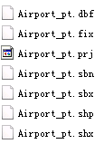
- 主文件（
*.shp） –存储地理要素的几何图形的文件。
- 索引文件（
*.shx） –存储图形要素与属性信息索引的文件。
- dBASE表文件（
*.dbf），–存储要素信息属性的dBase表文件。
- 空间参考文件（
*.prj）
- 几何体的空间索引文件（
*.sbn 和 *.sbx )
- 以XML格式保存元数据（
*.shp.xml)
- .fix文件
此类文件如非使用专业的GIS软件例如 ArcMap, QGIS, Udig等是打不开的
如非使用例如 GeoServer, ArcGIS Server等服务软件是无法对外部提供各种能力和接口的,例如获取瓦片图层，空间查询等
空间数据和普通业务数据最大的不同就是业务数据基本上就是文本数据。例如电商的商品信息，信息系统的姓名年龄身高性别等,我们可以方便的对他们进行存储，分词等。 空间数据有着各种点，边 ，面，无法保存进传统数据库表的字段中
然而,Oracle Spatial和PostgreSQL就提供了对空间数据的支持。它们可以导入shp数据，建立空间索引，提供了文本查询和空间查询 ，各大应用都可以通过数据库的协议来对空间数据进行增删查改,特别是查，不单单像普通业务数据那样可以进行查询，还可以进行空间查询，例如查找最近的餐馆，一个面和一个面是否相交，相交的面又是怎样的？ 这就大大开放了地理数据的能力。原来只能通过IO读取的shp文件，现在能提供给不同的业务系统进行增删查改
Oracle Spatial和PG的确是解决了大部分的问题,但是比较麻烦，我得安装一个Oracle Spatial或PostgreSQL，导入数据，启动服务，项目连接配置。项目实施起来相对比较麻烦,Oracle Spatial还是商用收费的，只有企业版才有
如果能有一种形式,无需起服务,Java应用能直接读取地理数据,而且已经现成的就建好了空间索引,能快速方便的进行属性查询，空间查询,那该多好，答案就是Lucene了
一般Lucene被大家熟知都是因为它是性能强大的全文检索引擎,著名的分布式搜索引擎ElasticSearch就是基于Lucene写的，很少有人知道其实Lucene也提供了空间扩展，支持空间查询
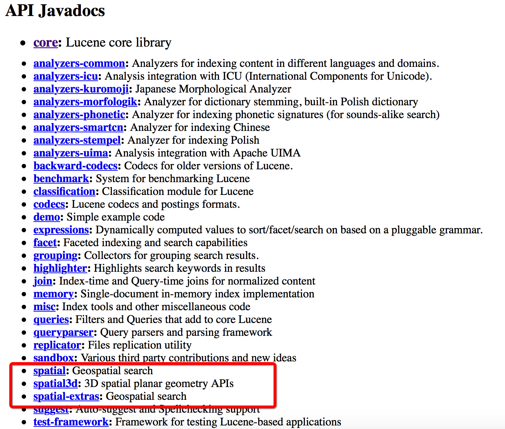
那么如何读取shp数据并存入lucene中呢？
shp存入Lucene
引入第三方包
首先我们需要引入一些第三方的jar包
我们介绍3个开源库 一个是GeoTools 一个是JTS 一个是Spatial4J
GeoTools是英国利兹大学(University of Leeds)的James Macgll 从1996 年开始研发的一个操作和显示地图的开源Java 代码库, 提供了一系列符合规范的操作地理空间数据的方法，例如可以用它来实现一个地理信息系统（GIS）。GeoTools库在开发时执行OGC规范. 很多工具和软件都使用了这个库 。 最著名的就是Udig和GeoServer
JTS加拿大的 Vivid Solutions公司做的一套开放源码的 Java API。它提供了一套空间数据操作的核心算法。提供了兼容OGC标准的空间对象模型中进行基础的几何操作
Spatial4J是 空间拓扑计算的Java包
我们使用Maven引入GeoTools(GeoTools中已经引入了JTS)
1 2 3 4 5 6 7 8 9 10 11 12 13 14 15 16 17
| <geotools.version>14.1</geotools.version> <dependency> <groupId>org.geotools</groupId> <artifactId>geotools</artifactId> <version>${geotools.version}</version> <type>pom</type> </dependency> <dependency> <groupId>org.geotools</groupId> <artifactId>gt-main</artifactId> <version>${geotools.version}</version> </dependency> <dependency> <groupId>org.geotools</groupId> <artifactId>gt-shapefile</artifactId> <version>${geotools.version}</version> </dependency>
|
Java读取ShapeFile文件
1 2 3 4 5 6 7 8 9 10 11 12 13 14 15 16
| ShapefileDataStoreFactory shpStoreFactory = new ShapefileDataStoreFactory(); ShapefileDataStore shapefileDataStore=null; try { shapefileDataStore = (ShapefileDataStore)shpStoreFactory.createDataStore(new File("/data/Airport_pt.shp").toURI().toURL()); shapefileDataStore.setCharset(Charset.forName("GBK")); } catch (IOException e) { e.printStackTrace(); } if(shapefileDataStore!=null){ String names[]=shapefileDataStore.getTypeNames(); System.out.println(Arrays.toString(names)); SimpleFeatureSource featureSource = shapefileDataStore.getFeatureSource(); System.out.println("shp名称:"+shapefileDataStore.getTypeNames()[0]); System.out.println("坐标系:"+featureSource.getSchema().getGeometryDescriptor().getCoordinateReferenceSystem().toString()); shapefileDataStore.dispose();
|
DataStore有很多实现类
1 2 3
| AbstractDataStore, AbstractFileDataStore, ArcSDEDataStore, ArrayDataStore, CollectionDataStore, ContentDataStore, DataStoreWrapper, DirectoryDataStore, JDBCDataStore, MemoryDataStore, OGRDataStore, OracleDatastoreWrapper, PostgisDatastoreWrapper, PreGeneralizedDataStore, PropertyDataStore, ShapefileDataStore, SingleFeatureSourceDataStore, WFS100DataStore, WFS110DataStore
|
提供了多种数据源的支持,例如Oracle,PostgreSQL,ShapeFile,WFS,内存,目录等 ,我们这边使用的是ShapefileDataStore
shpStoreFactory.createDataStore(URL url)返回的是FileDataStore 并不是 ShapefileDataStore ,它有2个实现类AbstractFileDataStore, ShapefileDataStore 所以直接强转就行了
DataStore.getTypeNames:Returns the names of all entries or types provided by the datastore.
结果:
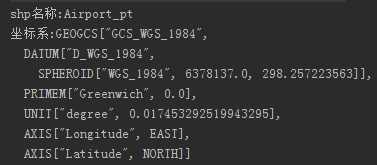
Java读取shp内容
1 2 3 4 5 6 7 8 9 10 11 12 13 14 15 16 17 18 19 20 21 22 23 24 25 26 27 28 29 30 31 32 33 34 35 36 37 38
| ArrayList<Airport> lists=new ArrayList<Airport>(); try { SimpleFeatureIterator itertor = featureSource.getFeatures().features(); while (itertor.hasNext()) { Airport airport=new Airport(); SimpleFeature feature = itertor.next(); Iterator<Property> it = feature.getProperties().iterator(); while (it.hasNext()) { Property pro = it.next(); switch (pro.getName().toString()){ case "Name": airport.setName(pro.getValue().toString()); break; case "Address": airport.setAddress(pro.getValue().toString()); break; case "PY": airport.setPY(pro.getValue().toString()); break; case "Display_X": airport.setDisplay_X(pro.getValue().toString()); break; case "Display_Y": airport.setDisplay_Y(pro.getValue().toString()); break; } if(pro.getValue() instanceof Point){ Point point=(Point)pro.getValue(); airport.setWKT(point.toText()); } } lists.add(airport); } itertor.close(); System.out.println("数据条数:"+lists.size()); } catch (IOException e) { e.printStackTrace(); }
|
如果是线, 多线 ,面
1 2 3 4 5 6 7 8 9 10
| if(pro.getValue() instanceof MultiLineString){ MultiLineString lineString=(MultiLineString)pro.getValue(); System.out.println(lineString.toText()); } if(pro.getValue() instanceof LineString){ MultiLineString lineString=(MultiLineString)pro.getValue(); System.out.println(lineString.toText()); }
|
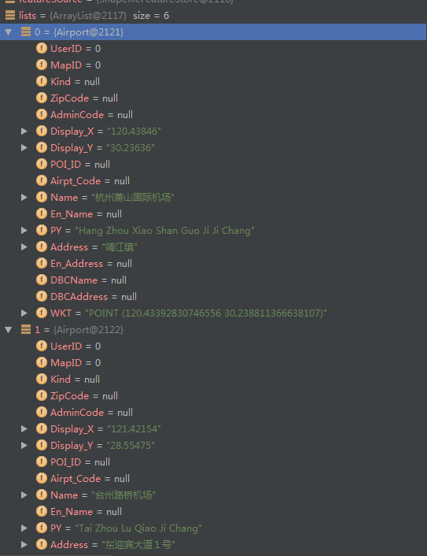
存入lucene
1 2 3 4 5 6 7 8 9 10 11 12 13 14 15 16 17 18 19 20 21 22 23 24 25 26 27 28 29 30 31 32 33 34 35 36 37 38 39 40 41 42 43 44 45 46 47 48 49 50 51 52 53 54 55 56 57 58 59 60 61 62 63 64 65
| File luceneDir=new File("/data/lucene"); Path path= Paths.get(luceneDir.getAbsolutePath()); Directory indexDirectory= FSDirectory.open(path); JtsSpatialContextFactory jtsSpatialContextFactory = new JtsSpatialContextFactory(); jtsSpatialContextFactory.srid = 4326; jtsSpatialContextFactory.autoIndex = true; String model = "sphere"; jtsSpatialContextFactory.geo = true; JtsSpatialContext jtsSpatialContext =new JtsSpatialContext(jtsSpatialContextFactory); Envelope env = new Envelope(-180, 180, 90, -90); jtsSpatialContextFactory.worldBounds = new RectangleImpl(env.getMinX(), env.getMaxX(), env.getMinY(), env.getMaxY(), jtsSpatialContext); JtsSpatialContext ctx = jtsSpatialContextFactory.newSpatialContext(); WKTReader wktReader=new WKTReader(ctx, new SpatialContextFactory()); SpatialPrefixTree spt = new GeohashPrefixTree(ctx, 23); SpatialStrategy strategy = new RecursivePrefixTreeStrategy(spt, "Geometry"); IndexWriter indexWriter = new IndexWriter(indexDirectory,new IndexWriterConfig(new SmartChineseAnalyzer(true))); for(int i=0;i<lists.size();i++){ Document doc = new Document(); StringField nameField= new StringField("Name",lists.get(i).getName(), Field.Store.YES); doc.add(nameField); StringField addressField= new StringField("Address",lists.get(i).getAddress(), Field.Store.YES); doc.add(addressField); StringField pyField= new StringField("PY",lists.get(i).getPY(), Field.Store.YES); doc.add(pyField); StringField xField= new StringField("X",lists.get(i).getDisplay_X(), Field.Store.YES); doc.add(xField); StringField yField= new StringField("Y",lists.get(i).getDisplay_Y(), Field.Store.YES); doc.add(yField); SortedDocValuesField sortedField = new SortedDocValuesField("PYName", new BytesRef(lists.get(i).getPY())); doc.add(sortedField); Shape shp=null; try { shp = wktReader.parse(lists.get(i).getWKT()); for (Field shpField : strategy.createIndexableFields(shp)) { doc.add(shpField); } StoredField wkt = new StoredField("wkt", lists.get(i).getWKT()); doc.add(wkt); } catch (ParseException e) { e.printStackTrace(); } indexWriter.addDocument(doc); } indexWriter.close();
|
一些函数api
生成一个默认的context
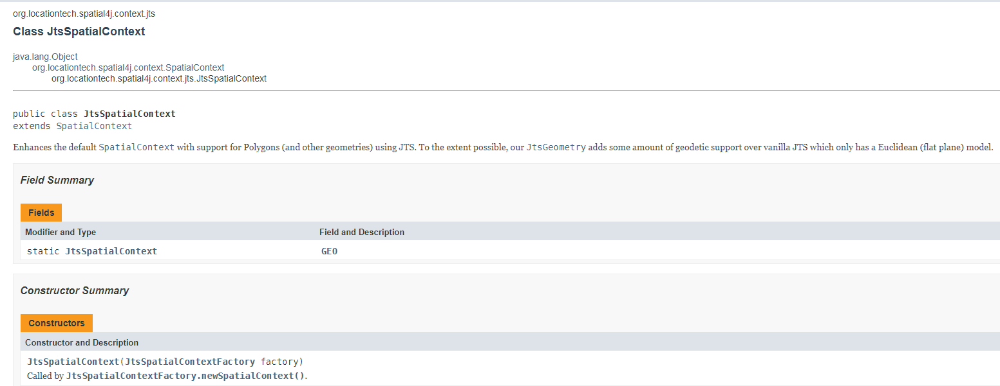
生成一个基于各种配置的context
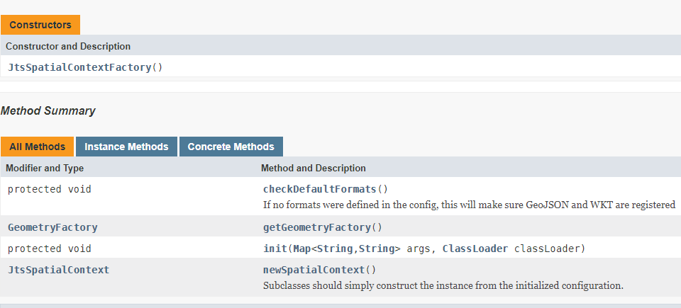
1
| JtsSpatialContextFactory 也是继承的 SpatialContextFactory
|
执行程序,可以发现目录中已经有索引文件了
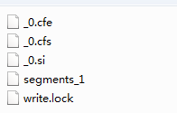
我们使用Luke工具来查看Lucene索引文件
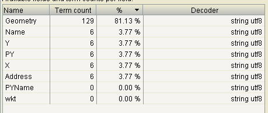
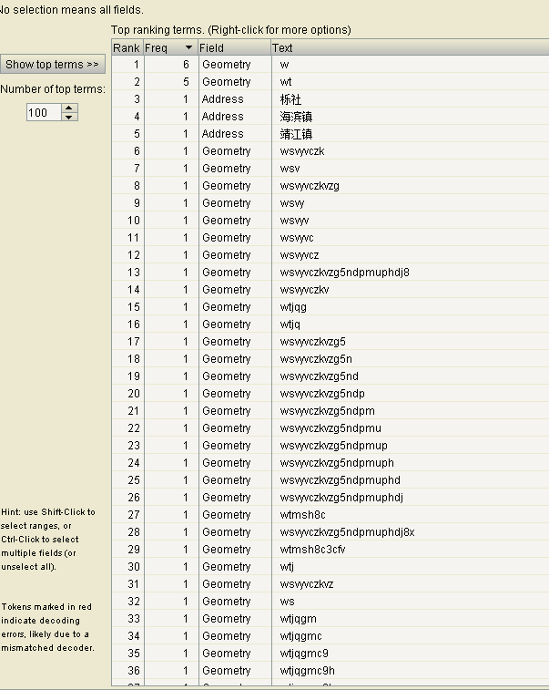
我们上面代码写到我们生成了23层geohash网格，我们使用luke工具查看一下是否是23层
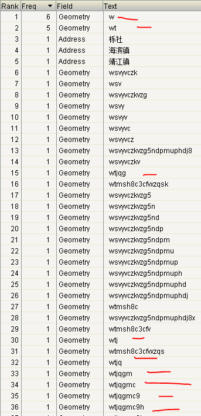
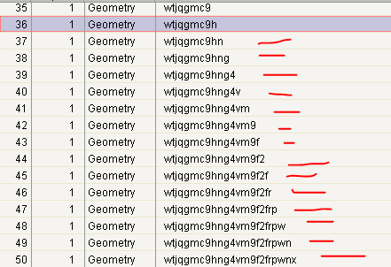
果然是23层
至此,空间数据索引并存储进Lucene完成了，接下来就要基于这些索引文件进行空间搜索了
PS:关于Lucene内部是如何实现存储,索引空间数据后续会有博文讲述
参考资料
solr空间索引原理及源码分析
Solr空间搜索原理分析与实践
Lucene Spatial构建地理空间索引
https://wiki.apache.org/solr/SolrAdaptersForLuceneSpatial4
https://sourceforge.net/projects/jts-topo-suite/
https://lucene.apache.org/core/7_2_1/spatial-extras/index.html